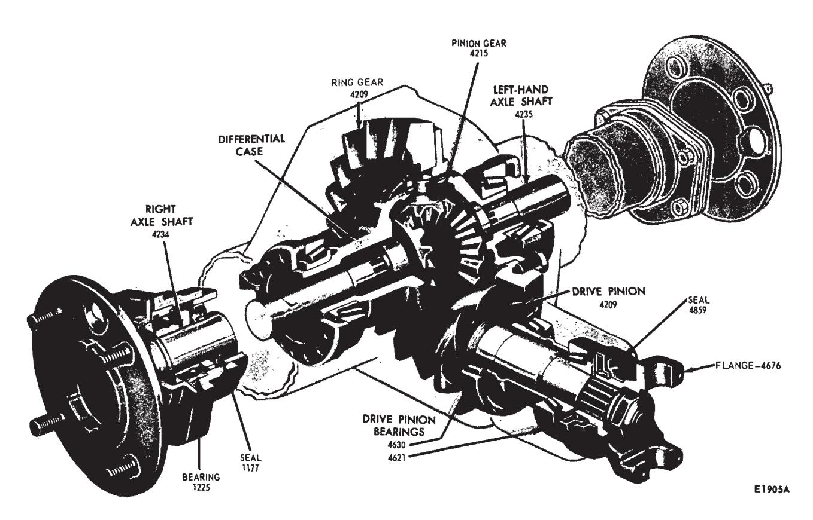
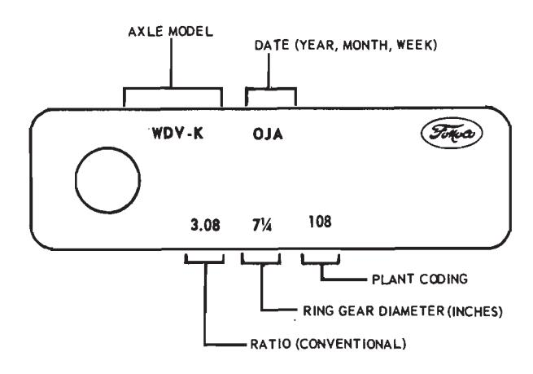
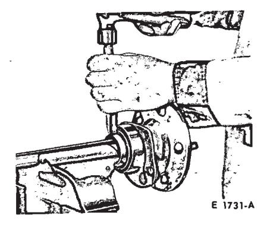
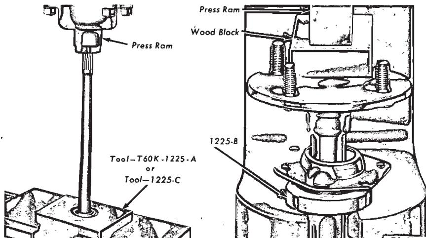
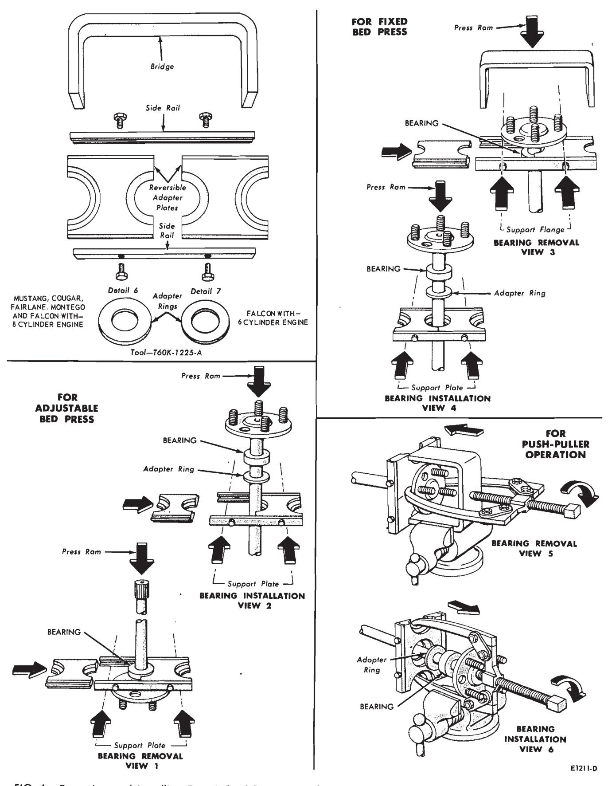
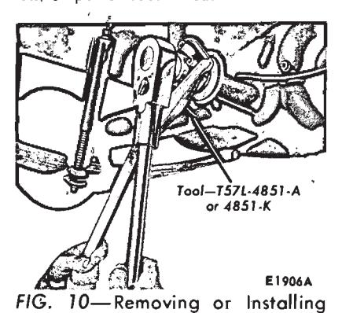
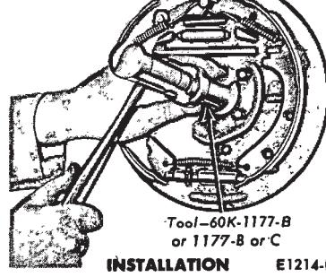

Part 15-03
Sub-parts
- Removal and Installation of the Original U-Joint Flange — 15-03-07
- Removal and Installation — 15-03-07a
- Major Repair Operations — 15-03-05
- Specifications — 15-03-06
Component Index
| COMPONENT INDEX Applies Only to Falcon, Maverick, Mustang | All Models Listed | COMPONENT INDEX Applies Only to Falcon, Maverick, Mustang | All Models Listed |
|---|---|---|---|
| AXLE HOUSING | PINION AND RING GEAR | ||
| Cleaning and Inspection | 01-09 | Cleaning and Inspection | 01-10 |
| Removal and Installation | 03-06 | Removal and Installation | 03-08 |
| AXLE SHAFT | PINION BEARING CUPS | ||
| Cleaning and Inspection | 01-10 | Cleaning and Inspection | 01-10 |
| Removal and Installation | 03-02 | Removal and Installation | 03-08 |
| CONVENTIONAL DIFFERENTIAL | PINION OIL SEAL | ||
| CASE | Removal and Installation | 03-03 | |
| Cleaning and Inspection | 01-10 | REAR WHEEL BEARINGS AND SEALS | |
| Disassembly and Overhaul | 03-08 | Cleaning and Inspection | 01-10 |
| Removal and Installation | 03-07 | Removal and Installation | 03-02 |
| DIFFERENTIAL BEARINGS AND RING | U-JOINT FLANGE | ||
| GEAR | Cleaning and Inspection | 01-10 | |
| Cleaning and Inspection | 01-10 | Removal and Installation | 03-05 |
| Removal and Installation |
A page number indicates that the item is for the vehicle(s) listed at the head of the column.
1 Description
The rear axle assembly is an integral-type housing, hypoid design, with the centerline of the pinion set below the centerline of the ring gear (Fig. 1).
The semi-floating axle shafts are retained in the housing by ball bearings and a bearing retainer at the axle housing outer ends.
The differential assembly is mounted on two opposed tapered roller bearings. The bearings are retained in the housing by removable caps. Differential bearing preload and drive gear backlash is adjusted by nuts located behind each differential bearing
The drive pinion assembly is mounted on two opposed tapered roller bearings. Pinion bearing preload is adjusted by a collapsible spacer on the pinion shaft. Pinion and ring gear tooth contact is adjusted by shims between the rear rear bearing cone and pinion gear.
A cover on the rear of the differential housing provides access for inspection and removal and installation of the differential assembly and drive pinion.
An identification tag is attached to one of the rear cover-to-housing retaining bolts (Fig. 2). It is important to use the axle model designation if necessary to obtain correct replacement parts.

Fig. 1 — Typical Rear Axle Assembly

Fig. 2 — Rear Driving Axle Model Identification Tag
2 In-Vehicle Adjustment and Repair
REAR AXLE SHAFT, WHEEL BEARING AND OIL SEAL REPLACEMENT
Removal and insertion of rear axle shafts must be performed with caution. The entire length of the shaft (including spline) up to the seal journal must pass through the seal without contact. Any roughing or cutting of the seal element during axle removal or installation will result in early seal failure.
The rear axle shafts, wheel bearings, and oil seal can be replaced without removing the differential assembly from the axle housing. Removal of the wheel bearings from the axle shafts make them unfit for further use.
-
Remove the wheel cover, wheel and tire from the brake drum.
-
Remove the Tinnerman nuts that secure the brake drum to the axle housing flange, and then remove the drum from the flange.
-
Working through the hole provided in each axle shaft flange, remove the nuts that secure the wheel bearing retainer plate. Then pull the axle shaft assembly out of the axle housing (Fig. 3). The brake backing plate must not be dislodged. Install one nut to hold the plate in place after the axle shaft is removed.

Fig. 3 — Removing Axle Shaft
Fig. 4 — Removing Rear Wheel Bearing Retainer Ring -
If the rear wheel bearing is to be replaced, loosen the inner retainer ring by nicking it deeply with a cold chisel in several places (Fig. 4). It will then slide off easily.
-
Remove the bearing from the axle shaft with the tool shown in Fig. 5 or 6. If the push-puller operation shown in Fig. 6 is used, be sure that the puller arms contact the flat surface of the axle shaft flange rather than the bolt heads. Also with this method, be careful not to damage or burr the oil seal journal as the bearing breaks loose.
-
Whenever a rear axle shaft is replaced the oil seal must be replaced. Remove the seal with the tools shown in Fig. 9.
-
Inspect the machined surfaces of the axle shaft and the axle housing for rough spots or other irregularities which would affect the sealing action of the oil seal. Check the axle shaft splines for burrs, wear or damage. Carefully remove any burrs or rough spots. Replace worn or damaged parts.
-
Lightly coat wheel bearing bores with axle lubricant.
-
Place the retainer plate on the axle shaft, and press the new wheel bearing on the shaft with the tool shown in Fig. 5 or 6. The bearing should seat firmly against the shaft shoulder. Do not attempt to press on both the bearing and the inner retainer ring at the same time.
-
Using the bearing installation tool, press the bearing inner retainer ring on the shaft until the retainer seats firmly against the bearing:
-
Wipe all lubricant from the inside of the axle housing in the area of the oil seal before installing the new seal.

Fig. 5 — Removing and Installing Rear Wheel Bearing -
Wipe a small amount of oil resistant sealer on the outer edge of the seal before it is installed. Do not put sealer on the sealing lip.
-
Install the new oil seal with the tools shown in Fig. 9. Installation without use of the proper tool will distort the seal and cause leakage.
-
Carefully slide the axle shaft into the housing so that the rough forging of the shaft will not damage the oil seal. Start the axle splines into the side gear, and push the shaft in until the bearing bottoms in the housing.
-
Install the bearing retainer plate on the mounting bolts at the axle housing, and install the attaching nuts. Torque the nuts to specifications.
-
Install the brake drum and the drum retaining nuts.
-
Install the wheel and tire on the drum, and install the wheel cover.
Removal and Replacement of Drive Pinion Oil Seal
Synthetic seals must not be cleaned, soaked or washed in cleaning solvent.
Replacement of the pinion oil seal involves removal and installation of only the pinion shaft nut and the universal joint flange. However, this operation disturbs the pinion bearing preload, and this preload must be carefully reset when assembling.
-
Raise the vehicle and install safety stands. Remove the rear wheels and brake drums.
-
Make scribe marks on the drive shaft end yoke and the axle U-joint flange to insure proper position of the drive shaft at assembly (Fig. 15). Disconnect the drive shaft from the axle U-joint flange. Be careful to avoid dropping the loose universal joint bearing cups. Hold the cups on the spider with tape. Mark the cups so that they will be in their original position in relation to the flange when they are assembled. Remove the drive shaft from the transmission extension housing. Install an oil seal replacer tool in the transmission extension housing to prevent transmission leakage. Refer to the transmission group for the appropriate tool.
-
Install an in-lb torque wrench on the pinion nut (Fig. 7). Record the torque required to maintain rotation of the pinion shaft through several revolutions.
-
While holding the flange with the tool shown in Fig. 10, remove the integral pinion nut and washer.

Fig. 6 — Removing and Installing Rear Wheel Bearing—Falcon, Mustang and Fairlane -
Clean the pinion bearing retainer around the oil seal. Place a drain pan under the seal, or raise the front of the vehicle higher than the rear.
-
Using the tool shown in Fig. 11, remove the pinion U-joint flange.
-
Using the tool shown in Fig. 8, remove the drive pinion oil seal.
-
Clean the oil seal seat.
-
Pinion oil seals have pre-applied oil resistant sealer. Install the seal in the retainer using the tool shown in Fig. 12.
-
Check splines on the pinion shaft to be sure they are free of burrs. If burrs are evident, remove them by using a fine crocus cloth, working in a rotational motion. Wipe the pinion shaft clean.

Fig. 7 — Checking Pinion Bearing Preload -
Apply a small amount of lubricant to the U-joint splines.
-
Align the punch mark on the U-joint flange with the mark on the end of the pinion shaft, and install the flange.
-
Install a new integral nut and washer on the pinion shaft. (Apply a small amount of lubricant on the washer side of the nut.)
-
Hold the flange with the tool shown in Fig. 10 while tightening the nut.
-
Tighten the pinion shaft nut, rotating the pinion occasionally to insure proper bearing seating, and take frequent preload readings (Fig. 7) until the preload is at the original recorded reading established in step 3.
-
After original preload has been reached, tighten the pinion nut slowly, until an additional preload of 6 to 12 in-lbs has been added.
The preload should not exceed the amount indicated above, or bearing failure may result. Under no circumstances should the pinion nut be backed-off to lessen preload. If this is done, a new pinion bearing spacer must be installed. In addition, the U-joint flange must never be hammered on, or power tools used.

Fig. 8 — Removing Pinion SealDrive Pinion Nut and T50T - 100 - A or 1175 - AE

Fig. 9 — Removing and Installing Axle Shaft Seal (Removing Pinion Seal Axle Shaft Oil Seal)
Fig. 9 — Removing and Installing Axle Shaft Seal -
Remove the oil seal replacer tool from the transmission extension housing. Install the front end of the drive shaft on the transmission output shaft.
-
Connect the rear end of the drive shaft to the axle U-joint flange, aligning the punch marks made on the drive shaft end yoke and the axle U-joint flange (Fig. 15).
-
Check the lubricant level. Make sure the axle is in running position. Add whatever amount of specified lubricant is required to reach the lower edge of the filler plug hole, located in the carrier casting or the housing cover.